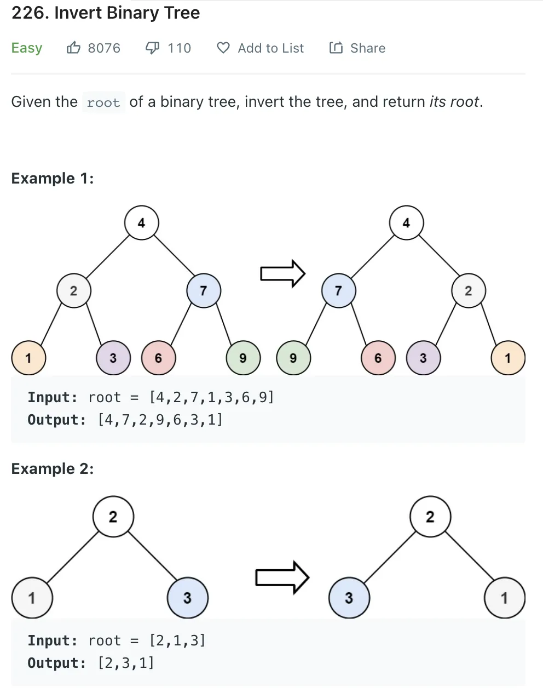
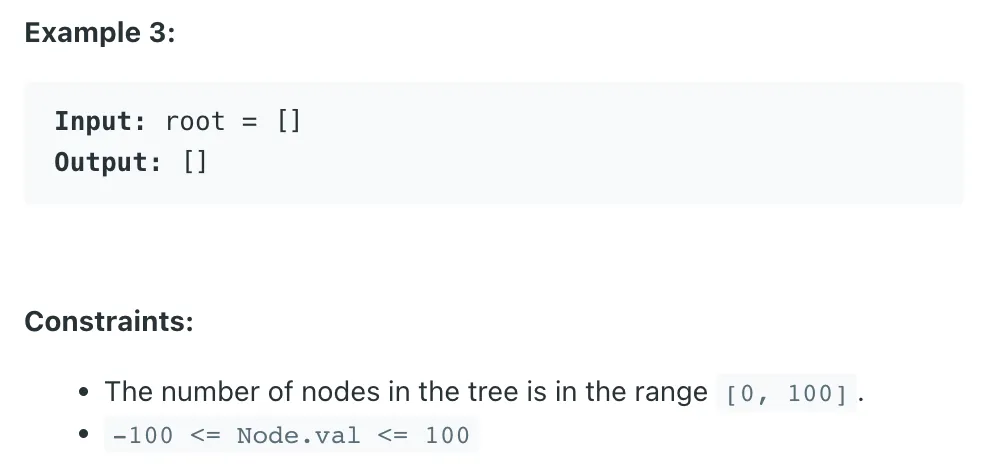

226. Invert Binary Tree
考過的公司：Bytedance
Question


✍🏽 My Solution
Runtime: 0 ms, faster than 100.00% of Java online submissions for Invert Binary Tree.
Memory Usage: 42 MB, less than 28.05% of Java online submissions for Invert Binary Tree.
class Solution {
public TreeNode invertTree(TreeNode root) {
if (root == null) return null; // 遞歸函數終止條件
// 將當前的左右子樹交換
TreeNode tmp = root.right;
root.right = root.left;
root.left = tmp;
invertTree(root.left);
invertTree(root.right);
return root;
}
}
func invertTree(root *TreeNode) *TreeNode {
if root == nil {
return nil
}
root.Left, root.Right = root.Right, root.Left
invertTree(root.Left)
invertTree(root.Right)
return root
}
🧠 Thought Process
- Why did I choose this particular implementation?
- 參考力扣
- 遍历二叉树，交换每个节点的子节点，交換當前的左右子樹，遞歸左子樹的子樹，遞歸交換完後換遞歸右子樹的子樹
- What is the time/space complexity of my solution? How do I know?
- time: O(n)
- space: O(h)
- What mistakes did I make?
- 會忘了return
Solution #1 [BFS]
Runtime: 0 ms, faster than 100.00% of Java online submissions for Invert Binary Tree. Memory Usage: 40.1 MB, less than 85.23% of Java online submissions for Invert Binary Tree.
class Solution {
public TreeNode invertTree(TreeNode root) {
if (root == null) return null;
Queue<TreeNode> queue = new LinkedList<>();
queue.offer(root);
while (!queue.isEmpty()) {
TreeNode cur = queue.poll();
TreeNode tmp = cur.left;
cur.left = cur.right;
cur.right = tmp;
if (cur.left != null) {
queue.offer(cur.left);
}
if (cur.right != null) {
queue.offer(cur.right);
}
}
return root;
}
}
Explanation (in my words)
- How does their solution work?
- OMG第一次自己看完思路後自己實現出來！！！！
- 我们需要先将根节点放入到队列中，然后不断的迭代队列中的元素。 对当前元素调换其左右子树的位置，然后：
- 判断其左子树是否为空，不为空就放入队列中 判断其右子树是否为空，不为空就放入队列中
- What is the space/time complexity of their solution?
- time: O(n)
- space: O(n)